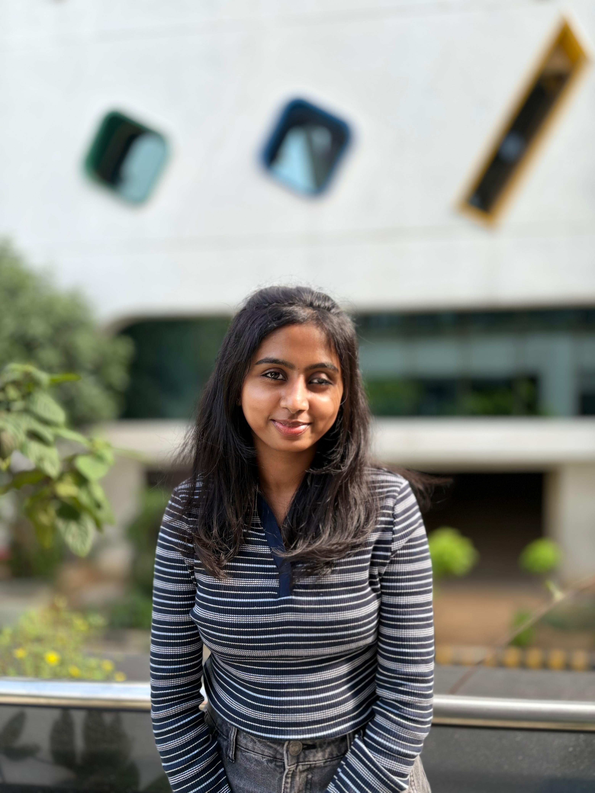

Power BI Portfolio – Karthika S
Power BI Developer | Proton Tester | Cognizant (3+ years)
Chennai, India ·
Karthika27sri@gmail.com
·
+91‑6382736360
⬇ Download Resume (PDF)
⬇ Download Resume (Word)
Power BI
DAX
Report Builder
SQL
Data Modeling
Proton Testing
Documentation

Highlights
Delivered
40+ Power BI reports
across enterprise projects; executed
150+ test cases
with
zero escalations
.
Won multiple
Cognizant Cheers Awards
: Doing the Right Thing, Raising the Bar, Asset of the Organization.
End‑to‑end experience in
BI migrations
: Cognos → Power BI, Qlik Sense → Power BI, SAP BO → Power BI.
Projects
1) Cognos → Power BI Migration (Novartis)
Built
12+ reports
using Power BI Desktop & Report Builder.
Executed
60+ Proton test cases
; produced FS, DS, CS, TRM docs.
2) Qlik Sense → Power BI (GDPD)
Designed an
optimized 2‑page report
with conditional formatting.
Validated parity between Qlik and Power BI outputs.
3) AppZen – End‑to‑End Development
Developed from scratch: Drill‑down, Drill‑through, Matrix, Calendar, DAX Time Intelligence.
Focused on business‑driven navigation and reusable measures.
4) SAP BO → Power BI (RMDatalake & Peach)
Migrated dashboards; delivered
8+ reports
, user demos, and
60+ test cases
.
Improved layout consistency and performance.
5) GCOT – Advanced Visualizations
Expanded a 10‑line Excel into analytical dashboards.
Used Heatmap, Sankey, Radar, and Gantt visuals.
6) Gloria – Multi‑Source Automation
Unioned multiple Excels with DAX over shared keys.
Added column‑reorder parameter and in‑table search;
30+ test cases
.
Education
B.E – Computer Science and Engineering
(CGPA: 8.6), PSNA College of Engineering and Technology, 2022
Achievements
Zero escalations across all projects.
Cognizant Cheers Awards: Doing the Right Thing, Raising the Bar, Asset of the Organization.
Certifications: AZ‑900, PL‑300, PL‑200.
Contact
Email:
Karthika27sri@gmail.com
Phone:
+91‑6382736360
Location: Chennai, India